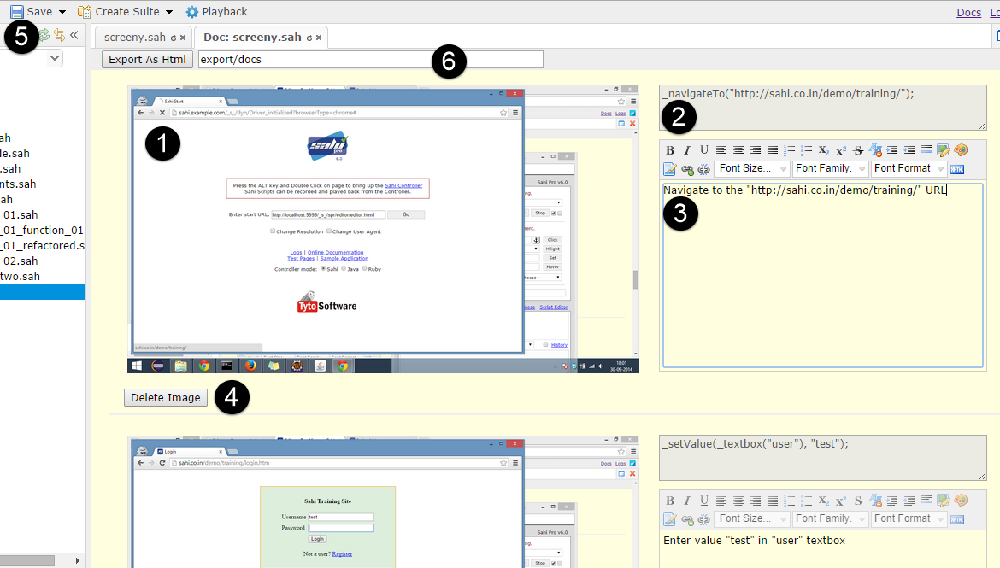
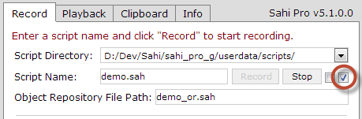

Sahi Pro - What is new in Sahi Pro v5.1.0
abstract
Sahi Pro v5.1.0 is a major release and contains many new features and bug fixes.
Key features
Internet Explorer 11 Support
Sahi Pro V5.1.0 adds support for the latest IE 11 browser.CORS support
Most browsers have implemented/upgraded their CORS support/implementation.Sahi Pro has updated its CORS support to handle HTML5 websites with cross domain AJAX requests.
Specifically, Access-Control-Allow-Origin errors that used to happen with older versions of Sahi Pro have been fixed.
Data Driven Suites
Say Hello to the next generation suite!Data Driven suites (.dd.csv) can be used to run scripts, suites, and other
data driven suite files, pass data, tag individual scripts/suites and run them
selectively. You can now data drive multiple scripts simultaneously.
More Details
Brand new documentation
Sahi's documentation has been rewritten. APIs have been covered extensively.Documentation is now available locally as part of the installation.
It can be accessed by clicking the "Docs" link on Sahi Dashboard.
Scenario Editor for Excel Framework
Sahi's Excel Framework allows business users and subject matter experts to writetest scripts in the language of the business and hide away implementation details.
The Scenario Editor takes it a step further by providing a web interface to manage such files.
It provides autocompletion of function definitions and highlights errors.
Sahi as a Documentation Tool
Sahi Pro can be used to create simple documentation with screenshots.Manual testers can use this as a tool to create a knowledge base for other manual or automation testers.
The recorded document contains the script, plus screenshots. It can be run as a normal sahi script too, thus helping automation testers
quickly see what needs to be done. Details 
Script specific object repository files
Object Repository files can be configured for individual scripts from the Controller during recording.
Upgrading Sahi becomes easier
Sahi Pro's Installer can now upgrade installed Sahi to a newer version.During an upgrade, the userdata folder is not overwritten, thus preserving user scripts and settings.
Details
Multiple browser sessions in single script
Sahi Pro can launch multiple browsers in the same session when needed._launchNewBrowser launches a new browser instance. The new instance does not share cookies with the base browser.
This allows testing functionality like chat where 2 simultaneous users need to be logged in into the system.
Once launched, steps can be directed to different browser instances via _selectBrowser.
REST APIs for WebServices
With these APIs you can access WebServices easily, instead of using Java code.More details are available here. FAQ is available here
Email notification on Suite execution
Emails can be sent on completion of suite. Testrunner, drun and ant can be configured to send an email containing the playback reports on finishing execution. DetailsLots of optimizations
Database connection pools, thread pools, better memory management etc. have been added to make Sahi Pro lean, fast and stable.If you use mysql or mssql as the reporting database, performance improvements can be significant.
New APIs
- _getWindows: Lists open windows
- _selectTextRange: Allows selecting of text
- _selectRange: Allows selecting of text
- _embed: Identifies embed tag element
- _pause: Pauses script for debugging
- _launchNewBrowser: Launches new browser without sharing cookies
- _font: Identifies font tag element
- _lock: Acquire a lock to synchronize scripts, for example when taking screenshots from scripts running in parallel
- _unlock: Release lock while synchronizing scripts
- _copyFile: Copy file
- _stop: Force stopping a script
- _mapDomainToIP: Map domain to IPs
- _getSelectionText: Get selected text
- _collectAttributes: Collect attribute from similar elements
- _trim: Trim string
- _setAccessorIgnoreCase: Ignore case when matching accessor attributes
Other features
- Sahi now integrates with Robot Framework.
- Sahi now integrates with Microsoft Test Manager(MTM).
- Ruby Docs updated.
- Added ability to change controller mode from Info tab in the controller.
- Added Anchor button on ruby and java controller.
- Added "Compare logs" button that compares the logs of 2 script files.
- Added support to identify elements using multiple attributes in Sahi Ruby driver.
- Added advice on _setXHRReadyStatesToWaitFor on clicking the "Diagnose" link in the Record tab of the controller.
- Fourth argument to specify encoding added to _writeToFile API.
- _expectConfirm and _expectPrompt APIs can accept regular expression.
- _rightOf, _leftOf and _under APIs upgraded to accept bounds in flex.
- Added bat file
/userdata/bin/clear-ie-history.bat /demo.xml - lock, unlock, selectRange, selectTextRange, hr, font, collect APIs added to Sahi Java driver to reflect _lock, _unlock _selectRange, _selectTextRange, _hr, _font, _collect APIs respectively.
- select_text_range, select_range, selection_text, left_of, right_of, left_or_right_of, above, under, above_or_under, collect APIs added to ruby driver to reflect _selectTextRange, _selectRange, _getSelectionText, _leftOf, _rightOf, _leftOrRightOf, _above, _under, _aboveOrUnder and _collect APIs.
- Sahi identifies elements through its label. If the HTMLFor property is specified for the label or if the element is the child of the label, Sahi identifies the element based on the label's name also.
- Ability to add bounds added to _leftOf, _rightOf, _leftOrRightOf APIs.
- Added third paramter for _expectConfirm API. It defines the scope of the _expect confirm statement
- When scripts fail in a suite
filename.suite, a file calledfilename_failed.suiteis automatically created with failed scripts.
Previously, one had to specify the failed suite name. This caused problems in filepaths during distributed runs.
We have now removed the olderfailedScriptsSuiteparameter from drun, testrunner and ant.
A new parameteroriginalSuitePathis added that specifies the original suite path.
originalSuitePathis used by Sahi to generate the failed suite (after adding_failedto the filename).
warning You may need to change your existing ant targets to reflect this. Have a look at playback on desktop and jenkins-sample.xml for usage.
-
Added executeSahi API for Sahi Java driver and execute_sahi API for Sahi Ruby driver. Statements in Sahi script can be executed using this API. eg.
b.executeSahi("_click(_button(\"button1\")"); // Sahi Java Driver
@b.execute_sahi("_click(_button('button1')"); // Sahi Ruby Driver
Use this in place of b.execute and @b.execute_step since you are no longer required to prefix Sahi APIs with "_sahi".
This allows you to directly copy code from the Controller (Sahi mode) and use in your scripts.
- _windowAction API now accepts width and height as additional optional parameters to resize the browser window.
- Added db connection pooling through c3p0
- Added ability to create new scenario and new script in Script Explorer (Web TestRunner)
- Added ability to show failed scripts in suite report
- Recording in Java and Ruby now append
b.at the start of accessors.
While recording, Sahi now usesb.instead ofbrowser.as prefix.
(b.saves space/characters while working on the Controller).
While using the currentSahiTestSuite.javabothbrowser.andb.can be used (existing code will work with new SahiTestSuite.)
browser.is same asb.(browser == b)
While using the currentsahi_test.rbbothbrowser.andb.can be used (existing code will work with new SahiTestSuite.)
browser.is same asb.(browser == b)
Bug Fixes
- Opening correct file with external script directories.
- Fixed showing title for offline script report.
- Fixed JS error in Controller during Java playback
- Fixed Controller opening in main page.
- Fixed update query in persist().
- Fixed Excel Framework reports.
- Fixed bug with Illegal characters in download file name
- _cell API fixed for spark grid.
- _cell API fixed for flex grid.
- Fixed Controller popup prefix for flex
- Fixed _setValue API compatibility with all HTML5 elements.
- Assert button of Controller fixed for applet.
- Fixed ++ and -- operators' usage in scripts.
- Fix for cookie containing comma issue.
- Bug fix for UA compatibility for IE.
- Start URL field on Sahi Start Page fixed for Enter key press.
- Fixed java and ruby mode to work for controller action with multi domain and pop-up
- Fixed _writeToCSV to append newline if already not there.
- _readCSVFile fixed for files with duplicate column header
- _takeScreenShot fixed for drun.
- Fixed _takeScreenShot on mac.
- Fixed apis _copyFile, _writeToFile and _renameFile to work with relative file path